Dieses Handbuch erklärt Schritt für Schritt, wie du die Website der Feuerwehr Piflas als Mitglied mit Zugang pflegst. Du brauchst dafür keine IT-Kenntnisse – alles geht am Handy.
Das Wichtigste in drei Sätzen
Du bekommst deinen Zugang nur per Einladung von einem Admin. Selbst registrieren geht nicht.
Was du darfst, hängt von deiner Rolle ab (Kapitel 2). Du siehst unten im Mitgliederbereich nur die Bereiche, die du brauchst.
Vor jeder Veröffentlichung bestätigst du mit einem Häkchen, dass Fotos und Text in Ordnung sind (Kapitel 4.4).
Du hast die Rolle „Mitglied“? Dann brauchst du nur Kapitel 3 (Anmelden) und Kapitel 12 (Lernen).
Mitgliederbereich – nach dem Login. Oben steht, als wer du angemeldet bist, unten ist eine Leiste mit deinen Bereichen. Eine rote Zahl an einem Bereich zeigt, dass dort etwas zu tun ist – zum Beispiel offene Freigaben oder ein Lernthema, das du noch nicht bestanden hast. Ist alles erledigt, verschwindet sie. Über das Logo oben links oder das Menü-Symbol (drei Striche) kommst du jederzeit zur öffentlichen Website – angemeldet bleibst du dabei, die Leiste unten bleibt. Über „Handbuch“ öffnest du dieses Dokument.
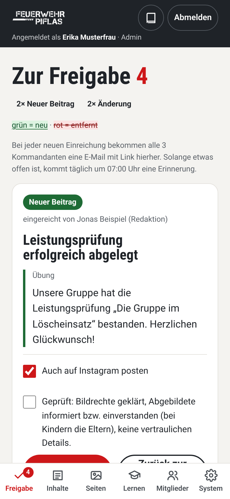
Mitgliederbereich als Admin: oben Name und Rolle, unten die Bereiche Freigabe, Inhalte, Seiten, Lernen, Mitglieder und System.
Die Abbildungen stammen aus der Demo der Website. Auf der fertigen Seite können Texte und Farben leicht abweichen, die Abläufe bleiben gleich.
2. Die Rollen im Überblick
Jedes Konto hat genau eine Rolle. Beim Anmelden musst du nichts auswählen – die Rolle steht in deinem Konto. Die Admins vergeben und ändern sie. Geplant sind 3 Kommandanten, 2 Admins, mehrere Personen in der Redaktion und alle übrigen Aktiven als Mitglied; es gibt immer mindestens zwei Admins.
Rolle
Für wen
Bereiche unten
Darf
Darf nicht
Admin
Webmaster/in und mindestens eine Vertretung
Freigabe, Inhalte (mit Planung), Seiten (mit Fotos), Lernen, Mitglieder, System
Alles: Mitglieder einladen und Rollen vergeben, alle Beiträge und Einsatzberichte bearbeiten, ausblenden und nach Nachfrage löschen, alle Fotos ersetzen oder entfernen, Einstellungen, Schnittstellen
Beiträge, Einsatzberichte und Änderungen prüfen und veröffentlichen, Einsätze von Hand anlegen, alle Beiträge und Einsatzberichte bearbeiten und ausblenden, Verein, Chronik, Fahrzeuge und Ausrüstung pflegen, Fahrzeuge und Geräte hinzufügen und entfernen, Instagram-Post auslösen, Lernthemen anlegen, Lernstand aller sehen
Beiträge löschen, Mitglieder verwalten, Einstellungen ändern
Redaktion
Pressearbeit, engagierte Aktive
Inhalte (mit Planung), Seiten, Lernen
Beiträge mit Fotos schreiben und zur Freigabe einreichen, eigene Beiträge bearbeiten (Änderung geht zur Freigabe) und ausblenden, Änderungen an Verein, Chronik, Fahrzeugen und Ausrüstung vorschlagen, Themen einplanen
Selbst veröffentlichen, fremde Beiträge ändern, löschen
Bereichsredaktion
z. B. Jugendwart
Inhalte (mit Planung), Seiten, Lernen
Im eigenen Bereich (z. B. Jugendfeuerwehr) schreiben, veröffentlichen, bearbeiten und ausblenden
Andere Bereiche, Einsatzberichte
Mitglied
Alle übrigen Aktiven der Einsatzabteilung
Lernen
Monatsthemen lesen, Tests machen, eigene Ergebnisse sehen
Wer macht was? Die Kapitel sind markiert: AlleKommandantAdmin
3. Anmelden Alle
3.1 Einladung annehmen (einmalig)
Du bekommst eine E-Mail „Einladung zur Website der Feuerwehr Piflas“. Der Link darin gilt 48 Stunden und nur einmal.
Tippe auf den Link und lege dein eigenes Passwort fest – ein sicheres, das du nirgends sonst verwendest (am besten im Passwort-Manager speichern).
Richte die 2-Faktor-Anmeldung ein: Authenticator-App (z. B. die App deines Handys) öffnen und den angezeigten QR-Code scannen. Für Admins und den Kommandanten ist das Pflicht.
Fertig – du landest im Mitgliederbereich.
Link abgelaufen? Kein Problem: Bitte einen Admin, die Einladung erneut zu senden.
3.2 Anmelden
Auf der Website oben rechts das Menü (drei Striche) öffnen und ganz oben auf „Login“ tippen. Den Link gibt es auch ganz unten auf jeder Seite.
E-Mail und Passwort eingeben, „Anmelden“. Eine Rolle musst du nicht wählen.
Den 6-stelligen Code aus deiner Authenticator-App eingeben, „Bestätigen“.
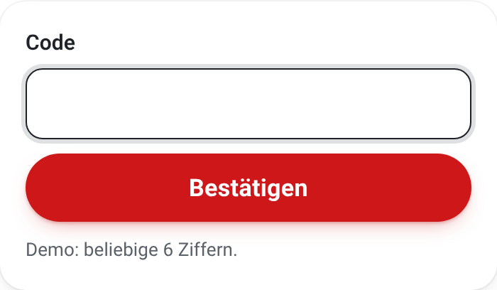
3.3 Passwort vergessen, abmelden
Passwort vergessen: Auf der Login-Seite „Passwort vergessen“ wählen. Du bekommst einen Link per E-Mail.
Mehrmals falsch eingegeben: Das Konto wird kurz gesperrt. Ein paar Minuten warten oder einen Admin fragen.
Abmelden: Oben rechts auf „Abmelden“. Bitte immer abmelden, wenn du ein fremdes Gerät benutzt.
Handy verloren? Sofort einen Admin informieren – das Konto wird gesperrt und die 2-Faktor-Anmeldung zurückgesetzt.
4. Inhalte: Beiträge und Einsatzberichte Alle
4.1 Neuen Beitrag schreiben
Unten auf „Inhalte“ tippen, dann oben „+ Neuer Beitrag“.
Titel eingeben – kurz und konkret, z. B. „Übung mit dem Wechsellader“.
Kategorie wählen: Verein, Übung, Jugendfeuerwehr oder Bürgertipp.
Text schreiben: Wer, was, wann – ein paar Sätze reichen. Immer in Du-Form und einfacher Sprache.
„Fotos hinzufügen“ antippen und Fotos aus Kamera oder Galerie wählen (Kapitel 4.2).
Optional eine Bildbeschreibung eingeben – sie hilft blinden Menschen, z. B. „Wechsellader beim Abrollen des Containers“.
„Auch auf Instagram posten“ an- oder abhaken.
Das Häkchen „Geprüft: …“ setzen (Kapitel 4.4).
In der Rolle Redaktion: „Zur Freigabe einreichen“. Kommandant und Admins: „Veröffentlichen“.
Neuer Beitrag mit zwei Fotos
4.2 Fotos
Du kannst mehrere Fotos auswählen. Das erste Foto wird das Titelbild, die weiteren erscheinen als Galerie unter dem Text.
Ein falsches Foto entfernst du mit dem × oben rechts am Vorschaubild.
Ein anderes Foto soll Titelbild sein? Auf „Titelbild“ unten am Vorschaubild tippen – es rückt nach vorn.
Die Website verkleinert Fotos automatisch und entfernt Standort- und Kameradaten. Du musst nichts vorbereiten.
Nur Bilddateien sind erlaubt – Fotos direkt vom Handy funktionieren.
Was darf auf ein Foto – und was nicht?
✓ Erlaubt
Übungen, Ausbildung, Fahrzeuge, Gerätehaus
Feste und Vereinsleben (alle Anwesenden wurden informiert, z. B. per Aushang)
Einsatzstellen nur von weitem und ohne Erkennbares
✗ Nicht erlaubt
Erkennbare Verletzte, Betroffene oder Schaulustige
Wenn jemand nicht abgebildet sein möchte, wird das Foto entfernt – ohne Diskussion.
4.3 Nach dem Speichern
Du bleibst in „Inhalte“ und kannst gleich weitermachen. Unten erscheint eine kurze Meldung mit zwei Knöpfen – dieselben stehen 5 Minuten lang auch oben im gelben Kasten „Zuletzt“:
„Beitrag ansehen“ zeigt den Beitrag so, wie ihn alle auf der Website sehen (Kommandant und Admins: sofort online).
„Vorschau ansehen“ – in der Rolle Redaktion – zeigt deinen Beitrag mit dem Hinweis „Vorschau – noch nicht öffentlich“. Er erscheint, sobald der Kommandant ihn freigibt; der bekommt automatisch eine Nachricht.
„Rückgängig“ nimmt das Speichern sofort zurück.
Auf der öffentlichen Seite bleibst du angemeldet: Oben stehen weiter dein Name und „Abmelden“, unten deine Leiste. Über das Menü-Symbol oben (drei Striche) erreichst du alle öffentlichen Seiten, über die Leiste kommst du mit einem Tipp zurück.
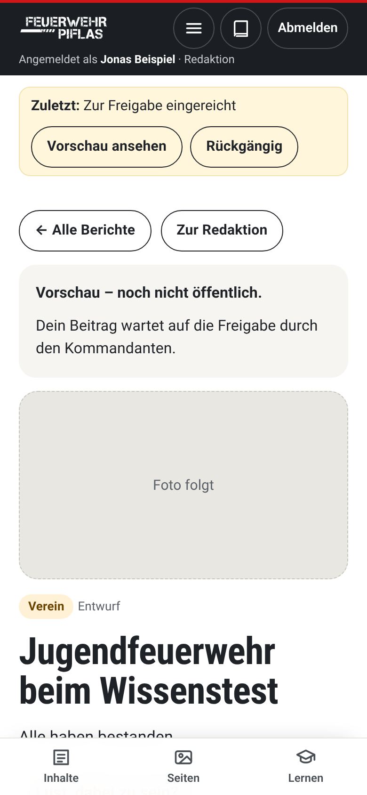
Vorschau in der Rolle Redaktion
4.4 Das Häkchen „Geprüft“
Ohne dieses Häkchen lässt sich nichts veröffentlichen oder einreichen. Damit bestätigst du:
Die Bildrechte sind geklärt (eigene Fotos oder schriftliche Erlaubnis).
Abgebildete Personen sind informiert bzw. einverstanden – bei Kindern die Eltern.
Der Text enthält keine vertraulichen Details (Namen von Betroffenen, Adressen, Verletzungen).
Im Zweifel: Häkchen nicht setzen und den Kommandanten fragen. Veröffentlichtes lässt sich nicht mehr ganz zurückholen.
4.5 Finden: Suche und Filter
Nach ein paar Jahren sind es mehrere hundert Einsätze, Übungen und Berichte. Unter „Inhalte“ findest du trotzdem alles in Sekunden:
Suchen: Ein Wort aus Titel, Text, Ort, Fahrzeug oder Name eintippen – die Liste filtert sofort.
Art: Alle, Einsätze, Übungen oder Berichte.
Jahr und Status (online, ausgeblendet, Änderung wartet, geplant) – beides lässt sich mit der Suche kombinieren.
Die Liste zeigt immer die neuesten 20. Mit „Weitere 20 anzeigen“ lädst du nach. „Filter zurücksetzen“ zeigt wieder alles.
Tippe auf einen Eintrag, um ihn zu öffnen.
In der Rolle Redaktion siehst du nur deine eigenen Beiträge. Wurde einer zurückgegeben, steht er oben unter „Zurück an dich“ – mit dem Hinweis des Kommandanten und dem Knopf „Überarbeiten und neu einreichen“.
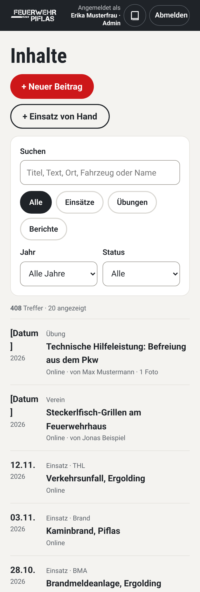
Inhalte: Suche, Filter und Liste
4.6 Bearbeiten, ausblenden, löschen
Ein Eintrag öffnet sich im Editor: oben das Formular mit Text und Fotos, darunter „Weitere Aktionen“ und der Verlauf. Bei Einsatzberichten kannst du alle Angaben ändern: Stichwort, Einsatzart, Ortsteil, Datum, Uhrzeit, Fahrzeuge, Kurzbericht und Fotos.
Knopf
Was passiert
Wer darf
Speichern
Ändern, Häkchen „Geprüft“ setzen, speichern. Optional kurz notieren, was du geändert hast – das steht dann im Verlauf. Instagram wird nicht erneut gepostet.
Redaktion: eigene Beiträge – die Änderung geht zur Freigabe, bis dahin bleibt die alte Fassung online. Kommandant und Admins: alle Beiträge und Einsatzberichte, sofort online.
Ausblenden
Sofort nicht mehr öffentlich, bleibt aber gespeichert. „Wieder einblenden“ macht ihn wieder sichtbar.
Wie Speichern, ohne Freigabe
Löschen
Erst kommt eine Nachfrage. Danach liegt er 30 Tage im Papierkorb (unten unter „Inhalte“) und lässt sich wiederherstellen.
Nur Admins
Lieber ausblenden als löschen. Ein Post auf Instagram bleibt in beiden Fällen bestehen – den löschst du direkt in Instagram.
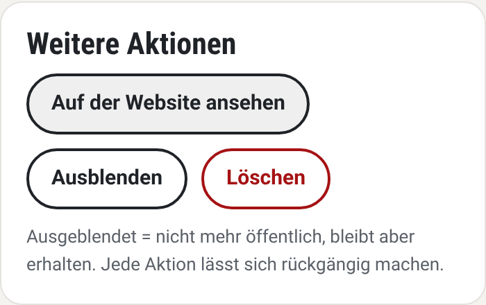
Weitere Aktionen im EditorNachfrage vor dem Löschen (Admin)
4.7 Rückgängig und Verlauf
Rückgängig: Nach jeder Änderung – speichern, ausblenden, löschen, freigeben, verwerfen – erscheint unten eine Meldung mit „Rückgängig“. Ein Tipp darauf, und alles ist wie vorher. Verpasst? Die letzte Aktion steht noch 5 Minuten lang oben auf jeder Seite („Zuletzt: … · Rückgängig“) – auch direkt auf dem gerade veröffentlichten Beitrag.
Verlauf: Jeder Beitrag, Einsatzbericht, jedes Fahrzeug und Gerät und die Seite „Verein & Chronik“ hat einen Verlauf – neueste Änderung oben, die aktuelle Fassung ist markiert. Er zeigt, wer wann was geändert hat, wer freigegeben hat und die Notiz dazu. Ein Tipp auf „Was wurde geändert?“ zeigt den Unterschied zur Fassung davor, markiert wie in der Freigabe (rot = weg, grün = neu).
Ältere Fassung zurückholen: Im Verlauf bei der gewünschten Fassung „Diese Fassung wiederherstellen“ tippen. In der Rolle Redaktion geht das als Änderung zur Freigabe.
Der Verlauf ist nur im Mitgliederbereich sichtbar. Niemand kann Einträge ändern oder löschen.
Schutz vor Fehlbedienung: Speichern ohne Änderung erzeugt keinen Eintrag; mehrere schnelle Änderungen derselben Person innerhalb von 10 Minuten werden zu einem Eintrag zusammengefasst; sehr viele Änderungen in kurzer Zeit werden gestoppt („Bitte warte ein paar Minuten“).
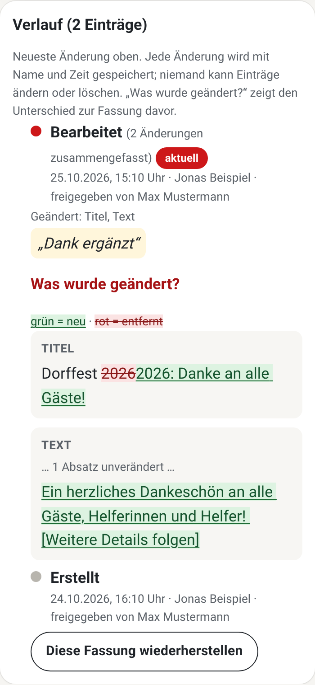
Verlauf eines Beitrags mit Freigabe und Notiz
5. Redaktionsplan Alle
Ziel: ein Beitrag pro Woche – auf der Website oder auf Instagram. Der Redaktionsplan zeigt, wer wann was schreibt.
Unten auf „Inhalte“ tippen, dann oben auf „Redaktionsplan“.
Unter „Thema einplanen“ Thema, Datum und die zuständige Person eintragen.
„Einplanen“ tippen.
Die zuständige Person bekommt 3 Tage vorher eine Erinnerung per E-Mail. Wenn 14 Tage nichts veröffentlicht wurde, bekommt der Kommandant einen Hinweis.
Ideen für Themen: Übungsbericht, Gerät im Fokus, Mitglied im Porträt, Jugendfeuerwehr, Bürgertipp, Rückblick auf ein Fest.
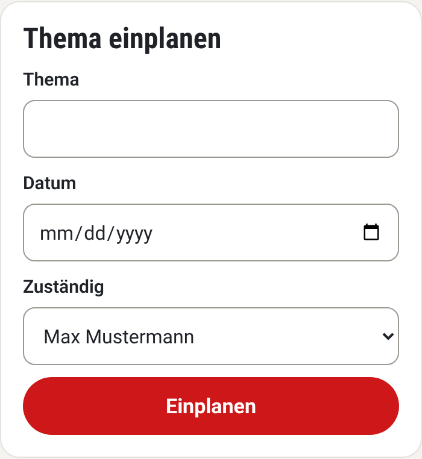
6. Freigeben KommandantAdmin
Unter „Freigabe“ (unten links, mit Zahl der offenen Einträge) findest du alles, was auf dich wartet: eingereichte Beiträge der Redaktion und neue Einsatzberichte aus DIVERA.
6.1 Beitrag der Redaktion freigeben
Beitrag lesen und Fotos ansehen.
Entscheiden, ob er auch auf Instagram erscheinen soll (Häkchen).
Prüfen und das Häkchen „Geprüft: …“ setzen.
„Veröffentlichen“ – fertig. Oder „Zurück zur Überarbeitung“, wenn etwas geändert werden muss; schreib in das Feld „Hinweis an die Redaktion“ kurz, was. Die Person sieht den Hinweis unter „Inhalte“.
6.2 Einsatzbericht freigeben
Nach jedem Alarm legt die Website automatisch einen Entwurf an. Er enthält nur Einsatzart, Ortsteil, gerundete Uhrzeit und Fahrzeuge – keine Adressen, keine Namen.
Optional einen Kurzbericht ergänzen, z. B. „Wir waren mit LF 8/6 vor Ort.“
Optional mit „Fotos hinzufügen“ Fotos ergänzen – nur ohne erkennbare Personen, Kennzeichen oder Gebäude. Ein falsches Foto entfernst du mit ×.
Bei technischer Hilfeleistung erscheint ein roter Hinweis: Bei Verletzten oder Toten erst veröffentlichen, wenn Polizei und Angehörige informiert sind.
Häkchen „Geprüft: …“ setzen und „Veröffentlichen“.
Der Bericht erscheint frühestens 2 Stunden nach dem Alarm – auch wenn du früher freigibst.
Soll ein Einsatz gar nicht erscheinen (z. B. aus Rücksicht auf Betroffene): „Verwerfen“. Aus Versehen verworfen? Sofort „Rückgängig“ tippen – oder später unten unter „Verworfen und zurückgegeben“ auf „Wiederherstellen“ (30 Tage).
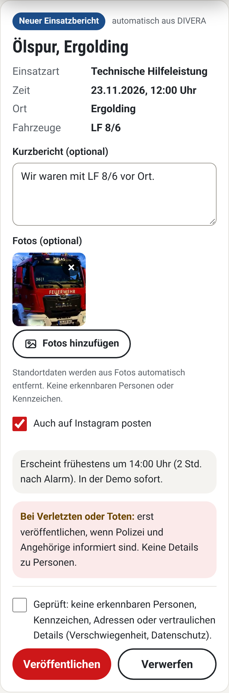
6.3 Änderungen übernehmen: Was ist anders?
Schlägt die Redaktion eine Änderung vor – etwa eine neue Fahrzeugbeschreibung oder einen Chronik-Eintrag – erscheint sie in der Freigabe als „Änderung · …“ (Beiträge genauso). Unter „Was sich ändert“ stehen nur die geänderten Felder – Wort für Wort markiert: rot durchgestrichen = fällt weg, grün unterstrichen = kommt neu dazu. Unveränderte Absätze sind zusammengefasst, bei Fotos siehst du vorher → nachher. Oben auf der Seite steht, wie viel von welcher Art wartet.
Änderung prüfen.
Häkchen „Geprüft“ setzen.
„Übernehmen“ – oder mit Hinweis „Zurück zur Überarbeitung“.
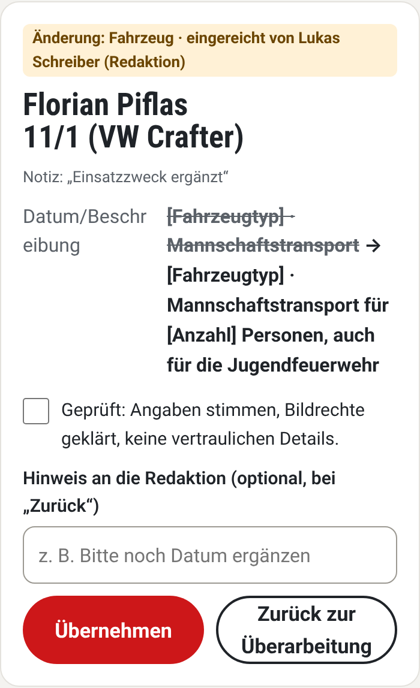
6.4 Einsatz von Hand anlegen
Kommt ein Einsatz nicht aus DIVERA – etwa bei einer Störung –, legst du ihn selbst an: unter „Inhalte“ auf „+ Einsatz von Hand“.
Stichwort (z. B. „Ölspur“), Einsatzart und Einsatzort: der Ortsteil – bei Einsätzen außerhalb der Gemeinde (wir fahren auch überörtlich) die Gemeinde, z. B. „Landshut“. Nie Straße oder Hausnummer; die Website weist so etwas ab.
Datum und Alarmzeit eingeben. Die Uhrzeit wird automatisch auf 15 Minuten gerundet.
Fahrzeuge ankreuzen, optional Kurzbericht und Fotos.
Häkchen „Geprüft“, dann „Speichern und veröffentlichen“.
Liegt der Alarm weniger als 2 Stunden zurück, erscheint der Bericht automatisch später (Status „Geplant“).
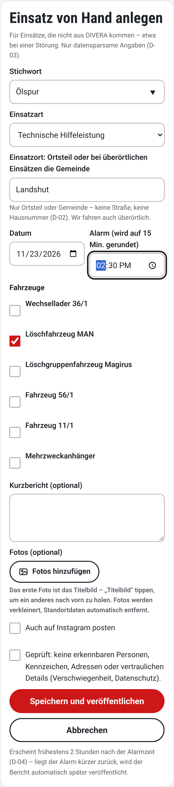
6.5 E-Mail-Hinweis
Bei jeder neuen Einreichung bekommen alle Kommandanten eine kurze E-Mail: was eingereicht wurde (z. B. „Neuer Beitrag von Jonas Beispiel“) und ein Knopf „Zur Freigabe“. Solange etwas offen ist, kommt täglich um 7:00 Uhr eine Erinnerung (Uhrzeit: System → Einstellungen).
In der Mail auf „Zur Freigabe“ tippen.
Anmelden (mit Code) – du landest direkt in der Freigabe.
Prüfen und freigeben wie in 6.1 bis 6.3.
Aus Datenschutzgründen stehen keine Inhalte in der Mail, und freigegeben wird nur auf der Website. Hat schon jemand anderes entschieden, steht in der Mail bzw. auf der Seite „Schon erledigt“.
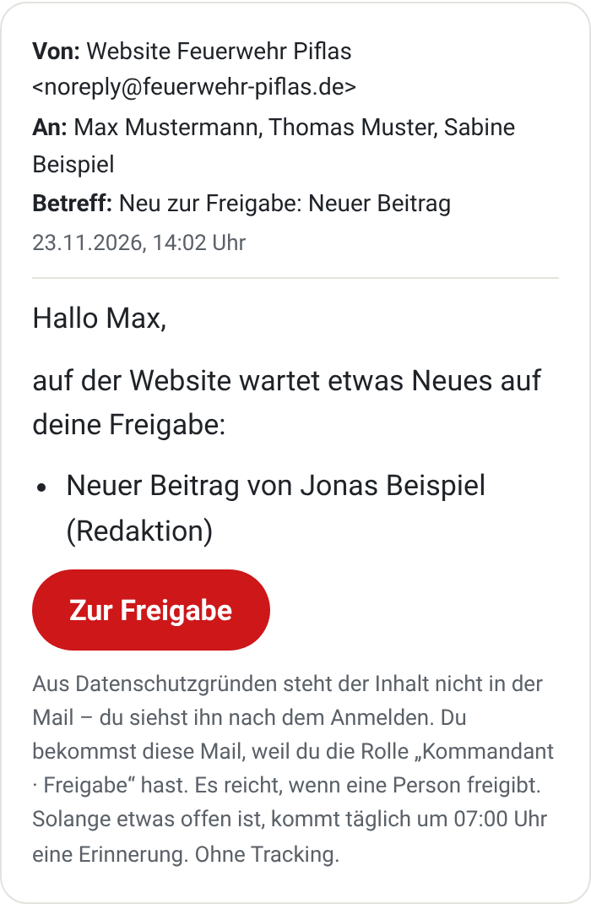
Hinweis-Mail an die Kommandanten
Checkliste vor dem Veröffentlichen
Keine Namen, Adressen, Kennzeichen oder Verletzungen im Text?
Keine erkennbaren Personen oder Einsatzobjekte auf Fotos?
Bei schweren Unfällen: Polizei und Angehörige informiert?
Sachlich, respektvoll, in Du-Form?
7. Seiten pflegen: Verein, Chronik, Fahrzeuge, Ausrüstung Alle
Unten auf „Seiten“ tippen und oben den Bereich wählen.
Verein: Einleitungstext und Vorstandschaft. Mit „+ Zeile“ kommt ein Amt dazu, mit × fällt eines weg.
Chronik: Jahr, Titel und optional ein Text. „+ Eintrag“ fügt einen Meilenstein hinzu; die Website sortiert nach Jahr. Der Rückblick auf das Jubiläum kommt automatisch.
Fahrzeuge: Name, Kurzname für Einsatzberichte, Beschreibung, Foto und Bildbeschreibung. Ein Fahrzeug kann groß als „Neu im Fuhrpark“ erscheinen.
Ausrüstung: Bezeichnung, Foto und Bildbeschreibung.
Wer
Darf
Redaktion
Alles bearbeiten und neue Fahrzeuge und Geräte anlegen – das geht zur Freigabe.
Kommandant, Admin
Sofort speichern; Fahrzeuge und Geräte anlegen und entfernen. Entferntes bleibt 30 Tage wiederherstellbar.
Ein neues Fahrzeug steht sofort im Formular „Einsatz von Hand“ zur Auswahl. Jede Änderung hat einen Verlauf (Kapitel 4.7).
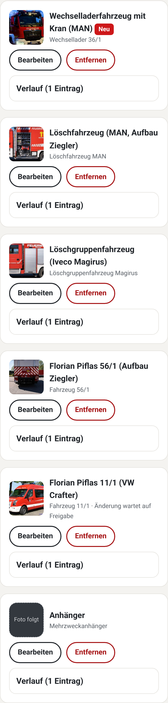
Fahrzeuge pflegen
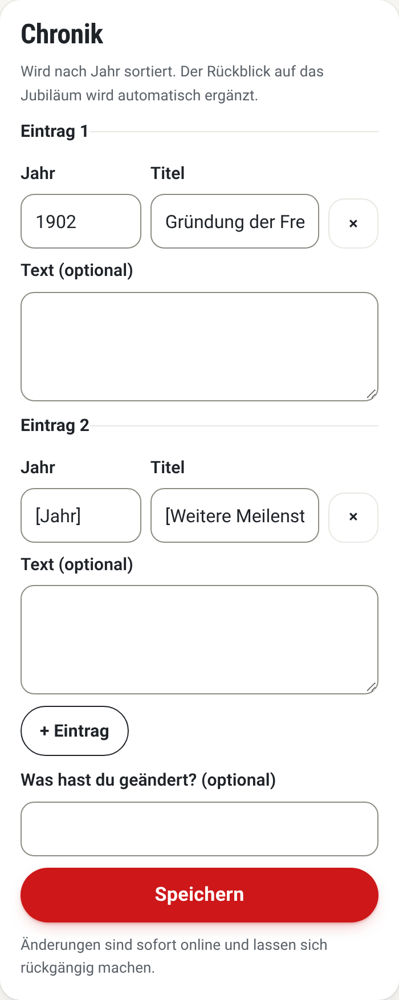
Chronik
8. Mitglieder verwalten Admin
8.1 Neues Mitglied einladen
Unten auf „Mitglieder“ tippen.
Unter „Neues Mitglied einladen“ Name, E-Mail und Rolle eingeben. Für Aktive, die nur lernen sollen: „Mitglied · nur Lernen“. Im Zweifel mit wenig Rechten beginnen – mehr Rechte gehen später immer.
Das Häkchen „Gehört zur Einsatzabteilung“ gesetzt lassen, wenn die Person im Lernstand mitzählen soll (z. B. nicht bei reinen Vereinsmitgliedern).
„Einladung senden“. Das Mitglied bekommt einen Link, der 48 Stunden gilt, und legt sein Passwort selbst fest (Kapitel 3.1).
Du kennst nie das Passwort eines Mitglieds und solltest es auch nie erfragen.
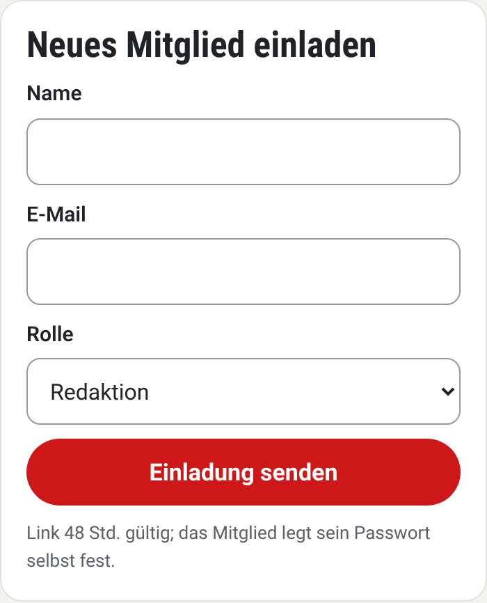
8.2 Konten im Blick behalten
Die Liste zeigt alle Konten mit Rolle und Status:
Aktiv · 2FA eingerichtet – alles in Ordnung.
Eingeladen · läuft in … ab – Einladung noch nicht angenommen. Mit „Erneut senden“ kommt ein neuer Link, mit „Zurückziehen“ wird die Einladung ungültig.
Rolle ändern: Beim Konto auf „Rolle ändern“ tippen, neue Rolle wählen, bei Bedarf das Häkchen „Einsatzabteilung“ anpassen und „Speichern“. Die Änderung gilt sofort, am Konto steht dann, wann und von wem sie geändert wurde. Mit „Rückgängig“ lässt sie sich zurücknehmen.
Deine eigene Rolle ändert ein anderer Admin.
Es bleiben immer mindestens zwei Admins – sonst lehnt die Seite das Herabstufen ab.
Wer neu Admin oder Kommandant wird, richtet beim nächsten Login die 2-Faktor-Anmeldung ein.
Mitglied hört auf: Konto deaktivieren (nicht löschen). Die Beiträge bleiben erhalten, die Lernergebnisse werden sofort gelöscht.
Faustregel: Immer mindestens zwei Admins. Freigabe- und Admin-Rechte nur so viel wie nötig.
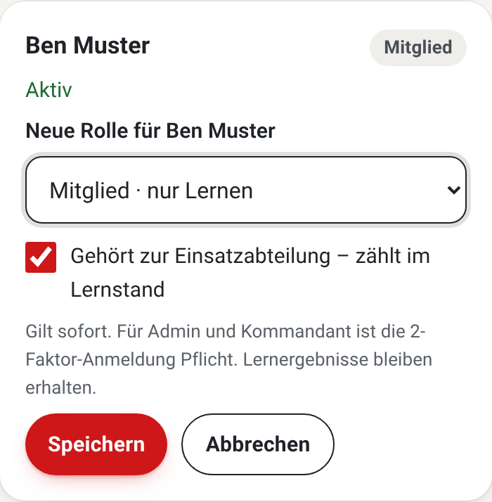
Rolle ändern
9. Fotos verwalten Admin
Zu finden unter „Seiten“ → „Alle Fotos der Website“.
Unter „Fotos“ siehst du alle Fotos der Website an einem Ort, sortiert nach Beiträgen, Seiten, Fahrzeugen & Technik und Instagram-Vorschau. Bei jedem Foto steht, wo es verwendet wird.
Ersetzen: Neues Foto auswählen – es wird überall ausgetauscht, wo das alte verwendet wurde. Ideal, wenn z. B. ein neues Fahrzeugfoto kommt.
Entfernen: Die Website fragt nach („Foto endgültig entfernen?“). Danach erscheint ein Platzhalter; aus Beiträgen fällt das Foto ganz heraus.
Instagram-Bilder werden nur auf der Website ausgeblendet – auf Instagram bleiben sie.
Wenn jemand verlangt, nicht auf einem Foto zu sein: Foto sofort entfernen und, falls es auch auf Instagram ist, dort löschen.
10. System und Einstellungen Admin
10.1 Die Zustands-Ampel
Unter „System“ zeigt die Ampel, ob alles läuft: Erreichbarkeit, Updates, Datensicherung, DIVERA, Instagram und Sicherheitszertifikat.
● Grün – alles in Ordnung, nichts zu tun.
● Gelb – bald etwas zu tun. Oft gibt es direkt einen Knopf, z. B. „Neu verbinden“ für Instagram: antippen und mit dem Instagram-Konto des Vereins anmelden.
● Rot – etwas funktioniert nicht. Du bekommst zusätzlich eine E-Mail. Hilft der Knopf nicht: Notfallkontakt anrufen (Kapitel 11.3).
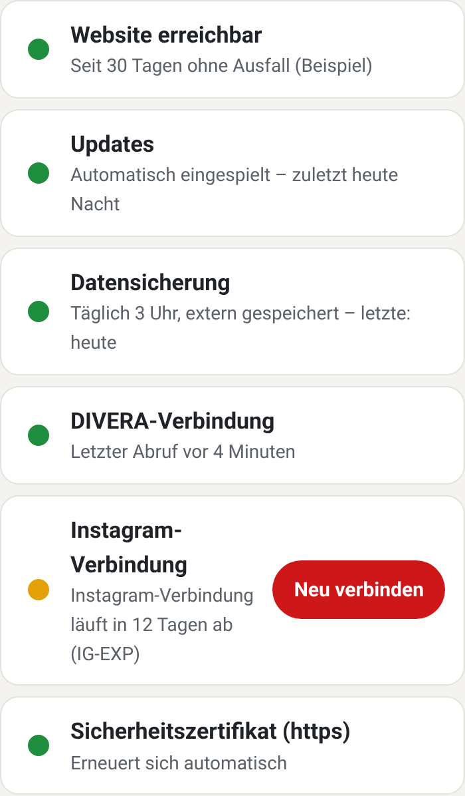
10.2 Schnittstellen: Diagnose und Notbetrieb
DIVERA (Einsätze, Termine) und Instagram (Vorschau, Posten) sind an die Website angebunden. Fällt eine Verbindung aus, läuft die Website weiter. Unter „System“ → „Schnittstellen“ siehst du:
was los ist – mit Fehlercode (z. B. DIV-401) und Erklärung in Klartext,
„So behebst du es“ – Schritt für Schritt,
„Verbindung testen“, „Schlüssel neu eintragen“ (DIVERA) bzw. „Neu verbinden“ (Instagram),
„Notbetrieb einschalten“: Der automatische Import pausiert. Einsätze legst du von Hand an (Kapitel 6.4), Termine trägst du selbst ein. Bei Instagram zeigt die Website dann nur einen Link zum Profil.
„Diagnosebericht kopieren“ – den schickst du an die technische Ansprechperson. Er enthält nie Passwörter oder Schlüssel.
Kommt der Fehler „Antwort hat sich geändert“ (DIV-FMT), hat der Anbieter seine Schnittstelle umgebaut. Das kann nur die Technik reparieren – dafür gibt es die Anleitung „Schnittstellen reparieren“ im Code-Archiv.
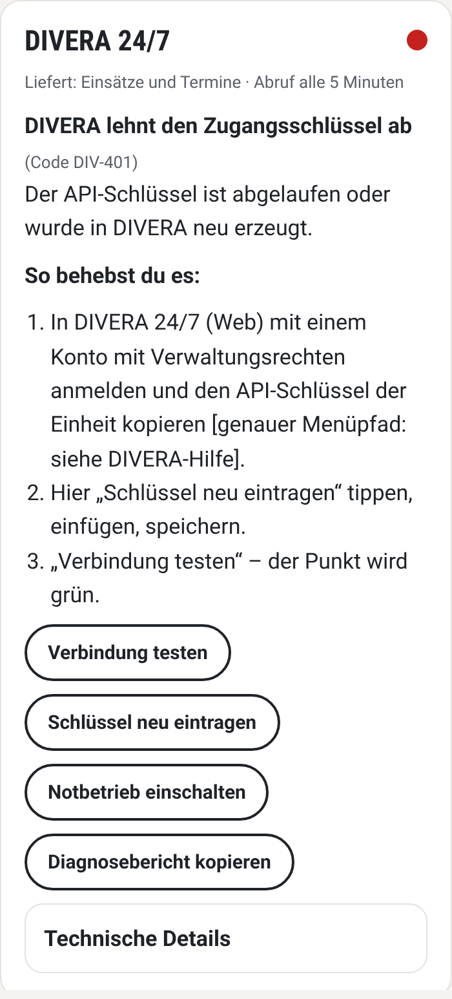
10.3 Inhalte ändern – ohne Programmieren
Bürgertipp: wechselt automatisch mit der Jahreszeit (z. B. Adventskranz im Dezember, Waldbrandgefahr im Sommer). Nichts zu tun.
Sonderhinweis: bei aktuellen Lagen wie hoher Waldbrandgefahr, Unwetter oder Hochwasser. Häkchen setzen, Überschrift und Text eingeben, optional ein Enddatum. Danach erscheint automatisch wieder der Jahreszeiten-Tipp. Inhalt vorher mit dem Kommandanten abstimmen.
Warntag und Probealarm: Der Hinweis erscheint automatisch 14 Tage vorher. Nur abschalten, wenn es einen Grund gibt.
Jubiläum „125 Jahre“: an/aus und Enddatum. Nach dem Enddatum verschwindet alles automatisch und bleibt nur in der Chronik.
Partnerfeuerwehren: Website-Adressen von Ergolding und Oberglaim.
E-Mail-Erinnerung: tägliche Erinnerung an offene Freigaben an/aus und Uhrzeit.
Am Ende immer „Speichern“ – Änderungen sind sofort online.
Verein, Chronik, Fahrzeuge und Ausrüstung pflegst du unter „Seiten“ (Kapitel 7). Kontaktdaten, Menü und PDFs (Beitrittserklärung, Spendenformular) pflegst du genauso über das Backend. Layout, Farben und Schriften sind geschützt – du kannst nichts kaputt machen.
11. Regelmäßige Aufgaben und Notfall Admin
11.1 Monatlich und jährlich
Wann
Was
Dauer
Monatlich (nach dem Monatsbericht am 1.)
Bericht lesen, gelbe und rote Punkte der Ampel abarbeiten, offene Freigaben anstoßen
ca. 10–30 Min.
Jährlich
Impressum, Datenschutzerklärung und Bürgerinfos prüfen; Konten durchgehen (wer braucht noch Zugang?); alte Fotos aussortieren; PDFs (Beitrittserklärung, Spendenformular) aktuell?
ca. 1–2 Std.
Einmal im Jahr
Übergabe-Übung: die zweite Person mit Admin-Rechten stellt testweise eine Datensicherung wieder her
ca. 1 Std.
11.2 Checkliste: Admin-Wechsel
Neue Person als Admin einladen – die bisherige erst nach der Übergabe entfernen.
Passwort-Tresor des Vereins übergeben (Hosting, Domain, DIVERA, Instagram).
2-Faktor-Anmeldung bei der neuen Person einrichten.
Gemeinsam eine Wiederherstellung aus der Datensicherung testen.
Kontakte im Impressum und in diesem Handbuch (10.3) aktualisieren.
11.3 Notfall: Wen anrufen?
Website nicht erreichbar
Webhoster-Support: [Telefon, Kundennummer]
Technische Frage
Technische Ansprechperson: [Name, Telefon]
Zweite Person als Admin
[Name, Telefon]
Falscher oder heikler Inhalt online
Sofort entfernen bzw. zurückziehen, dann den Kommandanten informieren: [Name, Telefon]
12. Lernen Alle
Jeden Monat gibt es ein neues Thema, zum Beispiel Verkehrsabsicherung oder Erste Hilfe. Du brauchst dafür etwa 10 Minuten – in der Mittagspause, im Zug oder auf dem Sofa. Mitmachen ist freiwillig und ergänzt die Übungsabende.
12.1 So geht’s – in drei Schritten
Öffnen: Anmelden und unten auf „Lernen“ tippen. Eine rote Zahl dort heißt: Dein Thema des Monats wartet. Oben steht es als große Karte mit Dauer und Fragenzahl. Tipp auf „Los geht’s“.
Lesen: Das Thema kommt in kurzen Seiten, eine pro Bildschirm. Mit „Weiter“ blätterst du, oben siehst du, wie weit du bist. Zum Schluss fasst „Das Wichtigste“ alles zusammen. Musst du zwischendurch weg? Kein Problem – beim nächsten Mal steht auf der Karte „Weiterlernen“, und du machst genau da weiter.
Testen: 5 Fragen, eine nach der anderen. Antwort antippen, „Antwort prüfen“ – du siehst sofort, ob es stimmt, und eine kurze Erklärung. Ab 4 richtigen Antworten hast du es geschafft.
Kennst du das Thema schon? Dann tipp auf „Kenn ich schon – direkt zum Test“.
Nicht geschafft? Macht nichts. Lies die Erklärungen, tipp auf „Nochmal versuchen“ oder „Inhalt nochmal lesen“. So oft du willst, ohne Zeitlimit.
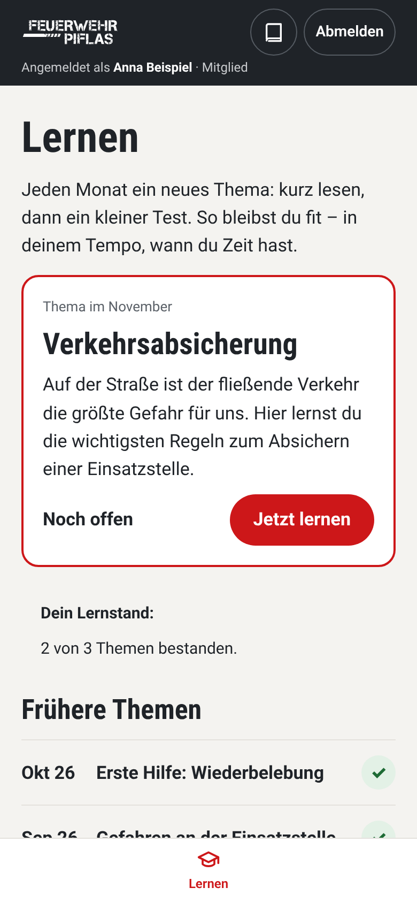
„Lernen“ mit dem Thema des Monats
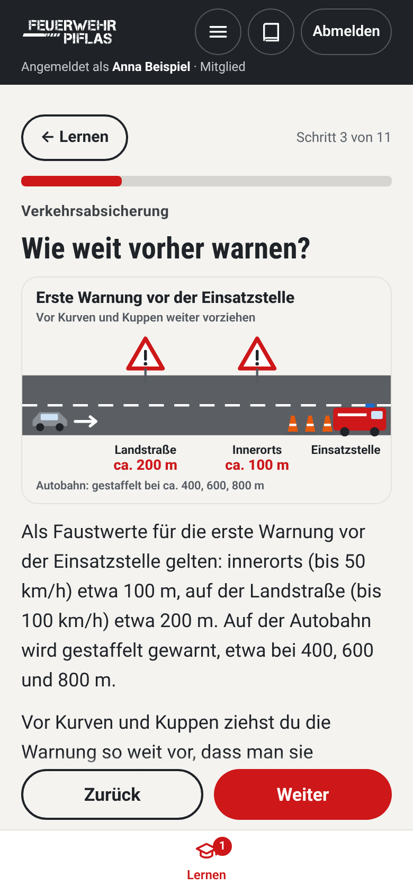
Eine Seite des Themas mit Skizze
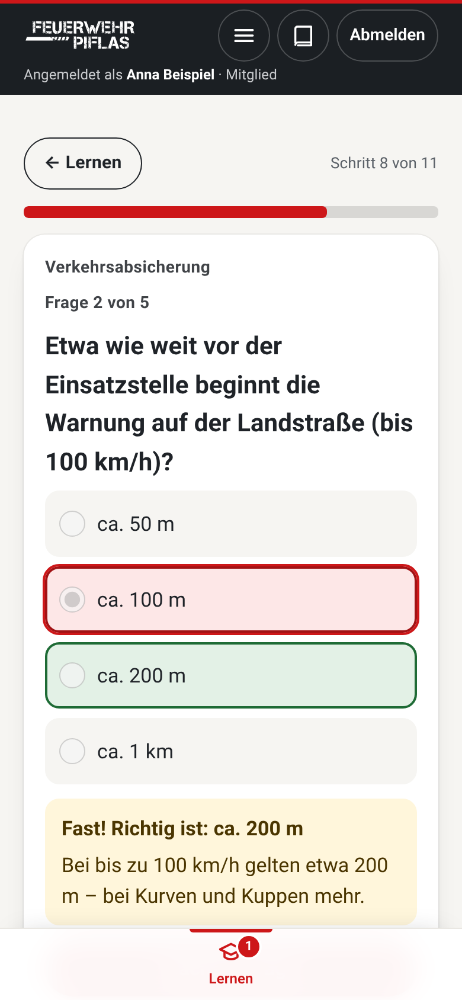
Frage mit sofortiger Rückmeldung
12.2 Dein Fortschritt
Themen geschafft: wie viele Themen du schon bestanden hast.
Monate in Folge: deine Serie – jeden Monat dabei, und sie wächst.
Gemeinsam: wie viele aus der Einsatzabteilung das Thema schon geschafft haben – nur als Zahl, ohne Namen.
Zum Nachholen: Themen aus früheren Monaten, die noch offen sind. Jedes dauert nur ein paar Minuten.
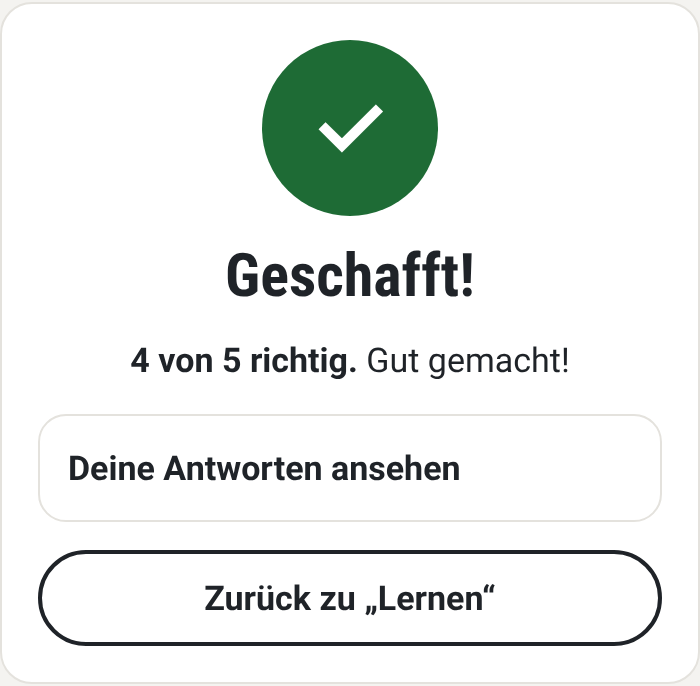
Geschafft!
Wer sieht meine Ergebnisse?
Du selbst und die Kommandanten – sonst niemand: keine Admins, keine Redaktion, nichts ist öffentlich.
Es gibt keine Rangliste. Die Kommandanten nutzen den Überblick, um Übungen zu planen.
Ergebnisse werden nach 3 Jahren gelöscht, wenn du austrittst sofort.
Sicherheit geht vor: Das Lernen ersetzt keine Ausbildung, keine Übung und keine Unterweisung. Im Einsatz gilt, was deine Führungskraft anordnet.
Tipp: Auf deinem eigenen Handy kannst du beim Anmelden „Auf diesem Gerät angemeldet bleiben“ anhaken. Dann musst du dich nicht jedes Mal neu anmelden. Auf fremden Geräten bitte nicht.
13. Lernthemen verwalten Kommandant
Die Kommandanten legen die Monatsthemen an und planen sie voraus. Alles geht am Handy oder am Computer, ohne Programmieren. Faustregel: zwei, drei Monate im Voraus planen – dann erscheint jedes Thema am Monatsersten von selbst.
13.1 Der Themenplan
Unten auf „Lernen“ tippen, dann im Kasten „Für Kommandanten“ auf „Themenplan“.
Du siehst 12 Monate untereinander: zwei zurück, den aktuellen (gelb hinterlegt) und neun voraus.
Jedes Thema zeigt sein Symbol, den Status und wie viele teilgenommen haben:
Entwurf – noch nicht fertig, nur für Kommandanten sichtbar
Geplant – fertig, erscheint am Monatsersten
Veröffentlicht – für alle sichtbar
Ausgeblendet – für Mitglieder unsichtbar, Ergebnisse bleiben
Bei leeren Monaten steht „Noch kein Thema“ mit dem Knopf „+ Thema für …“.
Fehlt für diesen oder den nächsten Monat ein Thema, erscheinen ein gelber Hinweis und eine rote Zahl am Bereich „Lernen“.
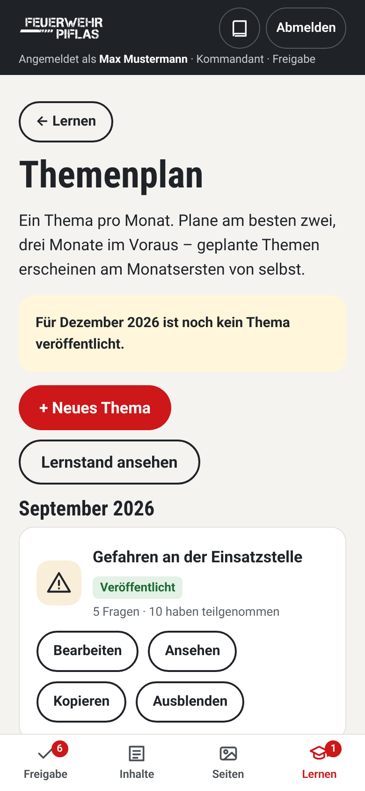
Themenplan
13.2 Neues Thema anlegen – Schritt für Schritt
Im Themenplan auf „+ Neues Thema“ oder beim gewünschten Monat auf „+ Thema für …“ tippen.
Idee wählen (optional): Ein Vorschlag wie „Sprechfunk im Einsatz“ setzt Titel und Symbol. Oder eigenen Titel eintragen.
Monat prüfen und ein Symbol wählen – es macht das Thema in der Übersicht leicht erkennbar.
Einleitung: ein, zwei Sätze, die Lust aufs Thema machen („Auf der Straße ist der Verkehr die größte Gefahr für uns …“).
Abschnitte: Jeder Abschnitt wird eine Seite am Handy. Am besten 2 bis 4 Abschnitte mit kurzer Überschrift und wenigen Absätzen. Leerzeile = neuer Absatz. „+ Abschnitt“ fügt einen weiteren hinzu.
Bild oder Skizze (optional, sehr empfohlen): mit „Bild hinzufügen“ ein eigenes Foto oder eine Skizze wählen und darunter kurz beschreiben, was zu sehen ist (für Vorlesesoftware, Pflicht). Eine einfache Handskizze – abfotografiert – reicht völlig.
Das Wichtigste: je Zeile ein Merksatz – das, was alle sicher wissen sollen.
Links: zur Feuerwehr-Lernbar oder zu Merkblättern (nur Adressen mit https://).
5 Testfragen: Frage, 2 bis 4 Antworten, den Kreis vor der richtigen Antwort antippen und eine kurze Erklärung schreiben. Sie erscheint gleich nach der Antwort.
Quelle mit Stand angeben, z. B. „Merkblatt 6.003, SFS Würzburg, Stand 05/2023“.
Der graue Kasten oben zeigt laufend, was noch fehlt, und die Lesezeit.
Noch nicht fertig? „Als Entwurf speichern“. Fertig? Häkchen „fachlich geprüft“ setzen und „Veröffentlichen“. Liegt der Monat in der Zukunft, ist das Thema geplant.
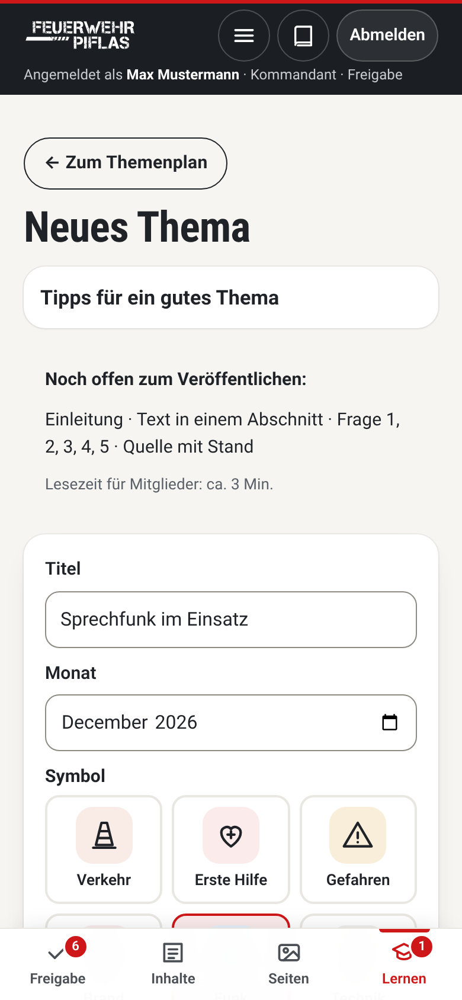
Ideen, „Was fehlt noch?“, Symbol
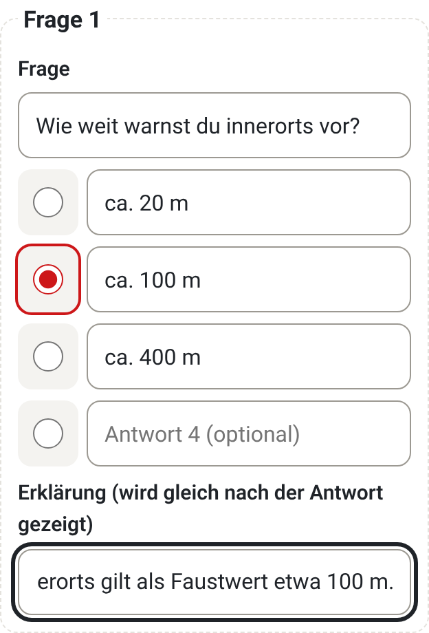
Eine Testfrage: Kreis = richtige Antwort
13.3 Bearbeiten, ansehen, kopieren, ausblenden
Bearbeiten: Fehler korrigieren, Monat ändern (= verschieben), Inhalt ergänzen. Hat schon jemand den Test gemacht, ändere die Fragen nur, wenn ein Fehler drin ist.
Ansehen: zeigt das Thema genau so, wie Mitglieder es sehen – auch Entwürfe. Dein Testergebnis in der Vorschau wird nicht gespeichert.
Kopieren: legt eine Kopie im nächsten freien Monat an – praktisch, um ein Thema aus dem Vorjahr aufzufrischen. Danach Inhalt und Quelle prüfen und speichern.
Ausblenden: Mitglieder sehen das Thema nicht mehr, die Ergebnisse bleiben. Einblenden holt es zurück. Mit „Rückgängig“ lässt sich jede Änderung sofort zurücknehmen.
Löschen können nur Admins (mit 30 Tagen Papierkorb).
So wird ein Thema gern gemacht
Kurz: in 10 Minuten zu schaffen. Lieber ein kleines Thema gut als ein großes halb.
Aus dem Alltag: „Was machst du, wenn …?“ statt Paragrafen abzufragen.
Erklärungen zu jeder Frage – daraus lernt man am meisten.
Ein Bild sagt mehr: Abstände, Handgriffe oder ein Merkschema als einfache Skizze. Nur eigene Zeichnungen und Fotos; Grafiken aus Merkblättern nur mit Erlaubnis der Feuerwehrschule.
Abwechslung über das Jahr: Technik, Erste Hilfe, Verkehr, Brand, Funk.
Am Übungsabend aufgreifen: Der Lernstand zeigt, welche Fragen schwer waren.
Recht: in eigenen Worten schreiben und Merkblätter verlinken, nicht kopieren; keine Fotos von Einsätzen, Personen oder Kennzeichen; die jährliche Unterweisung bleibt wie bisher.
13.4 Lernstand
Im Themenplan oder unter „Lernen“ auf „Lernstand“. Oben wählst du das Thema.
Teilnahme und bestanden: wie viele aus der Einsatzabteilung mitgemacht haben.
Welche Fragen waren schwer? Wo viele falsch lagen – ein gutes Thema für den nächsten Übungsabend.
Verlauf: die Teilnahme über die Monate.
Übersicht pro Person: ✓ bestanden, ✗ versucht, – offen, für die letzten vier Themen.
Vertraulich: Nur Kommandanten sehen den Lernstand. Nutze ihn zur Planung, nicht zur Bewertung Einzelner, und gib ihn nicht weiter. Wer zählt, legt der Admin mit dem Häkchen „Einsatzabteilung“ fest.
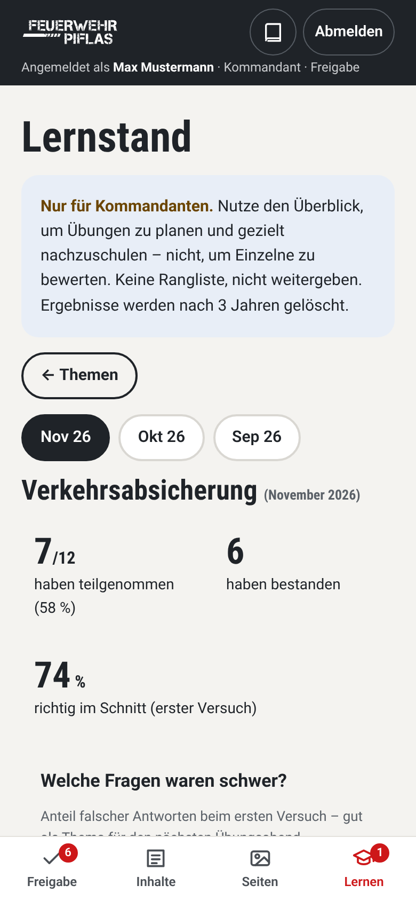
Lernstand
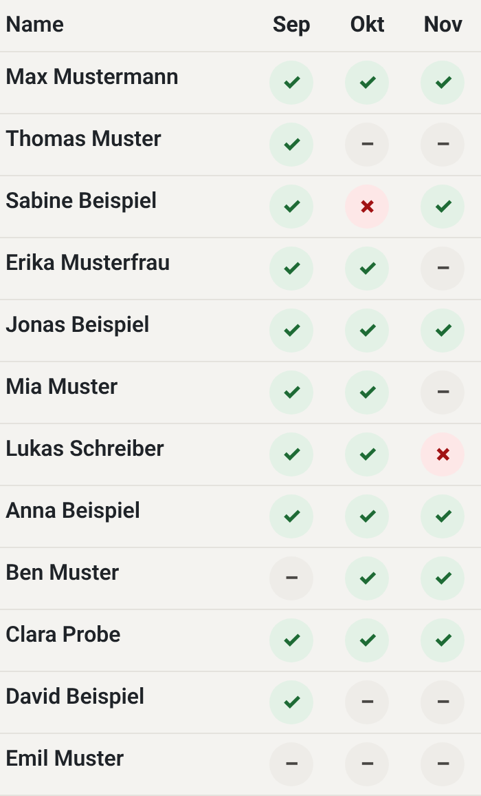
Übersicht pro Person
14. Häufige Fragen
Mein Einladungslink funktioniert nicht.
Er gilt nur 48 Stunden und nur einmal. Bitte einen Admin um „Erneut senden“.
Ich bekomme keinen Code mehr (neues Handy).
Ein Admin setzt die 2-Faktor-Anmeldung zurück. Danach richtest du sie neu ein.
Mein Beitrag ist nicht auf der Website.
In der Rolle Redaktion wartet er auf die Freigabe – das siehst du an „Vorschau – noch nicht öffentlich“. Frag bei Bedarf beim Kommandanten nach.
Ein Einsatzbericht ist freigegeben, aber noch nicht sichtbar.
Einsatzberichte erscheinen frühestens 2 Stunden nach dem Alarm. Das ist Absicht.
Der Beitrag ist nicht auf Instagram erschienen.
War das Häkchen „Auch auf Instagram“ gesetzt? Wenn ja: unter „System“ die Instagram-Ampel prüfen und ggf. „Neu verbinden“.
Ich habe ein falsches Foto oder einen Fehler veröffentlicht.
Direkt danach: „Rückgängig“. Später: Beitrag ausblenden (Kapitel 4.6), dann in Ruhe bearbeiten. Ein Foto, das auch anderswo verwendet wird, entfernen die Admins unter „Fotos“.
Ich habe aus Versehen etwas gelöscht oder geändert.
Sofort: „Rückgängig“ in der Meldung. Später: Gelöschtes holt ein Admin unter „Inhalte“ → „Papierkorb“ zurück (30 Tage); eine frühere Fassung holst du über den Verlauf zurück (Kapitel 4.7).
Wer hat diesen Text geändert?
Steht im Verlauf des Eintrags – mit Name, Zeit, Freigabe und Notiz.
Ich bekomme zu viele Erinnerungs-Mails.
Die Erinnerung kommt nur, solange etwas offen ist. Ein Admin kann sie unter System → Einstellungen abschalten oder die Uhrzeit ändern.
Es kommen keine Einsätze mehr aus DIVERA.
Unter „System“ → „Schnittstellen“ nachsehen (Kapitel 10.2). Bis zur Reparatur Einsätze von Hand anlegen (Kapitel 6.4).
Ich finde einen alten Einsatz nicht.
Unter „Inhalte“ Jahr und Art wählen oder ein Stichwort suchen (Kapitel 4.5).
Ich sehe kein neues Lernthema.
Das Thema erscheint am Monatsersten. Bis dahin steht das letzte Thema oben. Frag sonst beim Kommandanten nach.
Kann ich einen misslungenen Test löschen?
Nein, aber du kannst ihn beliebig oft wiederholen. Für dich zählt „geschafft“, sobald ein Versuch bestanden ist.
Ich habe das Lernen mittendrin abgebrochen.
Dein Fortschritt ist gespeichert. Unter „Lernen“ auf „Weiterlernen“ tippen.
Darf ich Fotos von anderen Feuerwehren oder aus der Zeitung verwenden?
Nur mit schriftlicher Erlaubnis der Person, die das Foto gemacht hat. Im Zweifel nicht.